2N/C
2N/C  /2 ×
/2 ×  2N/C /2
2N/C /2  . For example, here are 3 sets of 6 non-attacking rooks on an 8×8 chessboard:
. For example, here are 3 sets of 6 non-attacking rooks on an 8×8 chessboard:
| 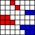 | 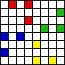 |
Unfortunately, the problem of placing different colored rooks on a chessboard is not as interesting. It is not hard to show that the maximum number of rooks of C different colors on an N×N chessboard so that none attacks a rook of a different color is 2N/C /2 × 2N/C /2 . For example, here are 3 sets of 6 non-attacking rooks on an 8×8 chessboard:
This month we consider the problem of placing the maximum number of bishops or knights of C different colors each on an N×N chessboard so that no bishop or knight attacks one of a different color. Let B(C,N) be the maximum number of bishops, and K(C,N) be the maximum number of knights.
Clearly B(1,N) = K(1,N) = N2 and B(2,N) = N2/2 . Can you show B(3,5)=5? or B(3,6)=8? Can you find a formula or bounds for B(3,N)? How about B(C,N)? Can you show K(3,4)=4? or K(5,5)=3? Can you find a formula for K(2,N)? What are the other values of K(C,N)?
Joseph DeVincentis proved and B(N–1,N)=4.
Emilio Schiavi proved that B(2N–2,N)=1 and B(N,N)=2. He also proved the following. Let C be even and let K = 2N/C . Then if C divides 2N, then B(C,N) ≥ K2/2 , and if not, then B(C,N) ≥ K(K+1)/2 .
Philippe Fondanaiche conjectured that B(3,N)=2N–4 if N is even and B(3,N)=2N–5 if N is odd, and B(4,N)=2N–6, but these fail for large N.
Corey Plover noticed that B(C,N) ≥ a B(aC,N), and conjectured that B(4,2N) = (N+1)2/2 – 2.
Sasha Ravsky showed that B(C,N) ≤ ((2N–1)/C)2.
Joseph DeVincentis, Philippe Fondanaiche, Corey Plover, and Claudio Baiocchi found many of the small configurations below.
| N \ C | 1 | 2 | 3 | 4 | 5 | 6 | 7 | 8 | 9 |
|---|---|---|---|---|---|---|---|---|---|
| 1 | 1 | ||||||||
| 2 | 4 | 2 | |||||||
| 3 | 9 | 4 | 2 | 1 | |||||
| 4 | 16 | 8 | 4 | 2 | 1 | 1 | |||
| 5 | 25 | 12 | 5 | 4 | 2 | 1 | 1 | 1 | |
| 6 | 36 | 18 | 8 | 6 | 4 | 2 | 1 | 1 | 1 |
| 7 | 49 | 24 | 10 | 8 | 4 | 4 | 2 | 1 | 1 |
| 8 | 64 | 32 | 14 | 10 | 6 | 4 | 4 | 2 | 1 |
| 9 | 81 | 40 | 17 | 13 | 8 | 6 | 4 | 4 | 2 |
| 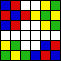 | ||
| 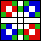 | 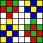 | |
 | 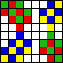 | 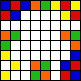 |
Philippe Fondanaiche and Claudio Baiocchi showed that K(2,2n) ≥ 2n(n-1) for n > 2 and K(2,2n+1) ≥ 2n2 for n ≥ 2.
Joseph DeVincentis noticed that by placing the knights all on the black squares of the checkerboard, we have K(2,N) ≥ N2 /2 /C . Claudio Baiocchi noted that often some knights can be placed on white squares to improve this bound.
Corey Plover noticed that K(C,N) ≥ a K(aC,N).
Claudio Baiocchi showed that K(4,2n) ≥ 1+(n–1)2 and K(4,2n+1) ≥ n+(n–1)2. He notes these are not sharp for 5×5 or 6×6 boards, but expects they are for larger n.
Sasha Ravsky showed that K(C,N) ≥ N ((N+2)/C – 2) by placing knights of different colors in different rows separated by 2 blank rows.
Joseph DeVincentis, Philippe Fondanaiche, and Claudio Baiocchi found many of the small configurations below.
| N \ C | 1 | 2 | 3 | 4 | 5 | 6 | 7 | 8 | 9 |
|---|---|---|---|---|---|---|---|---|---|
| 1 | 1 | ||||||||
| 2 | 4 | 2 | 1 | 1 | |||||
| 3 | 9 | 3 | 2 | 1 | 1 | ||||
| 4 | 16 | 6 | 4 | 2 | 1 | 1 | 1 | 1 | |
| 5 | 25 | 10 | 5 | 4 | 3 | 2 | 2 | 1 | 1 |
| 6 | 36 | 14 | 8 | 6 | 4 | 3 | 3 | 3 | 2 |
| 7 | 49 | 18 | 11 | 7 | 5 | 4 | 4 | 3 | 3 |
| 8 | 64 | 24 | 14 | 10 | 7 | 6 | 5 | 4 | 3 |
| 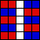 | |||||
| 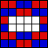 | 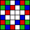 | 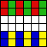 | |||
| 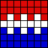 |  | 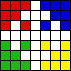 | 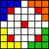 | ||
| 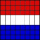 | 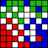 |  | 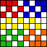 | 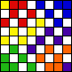 | 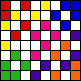 |